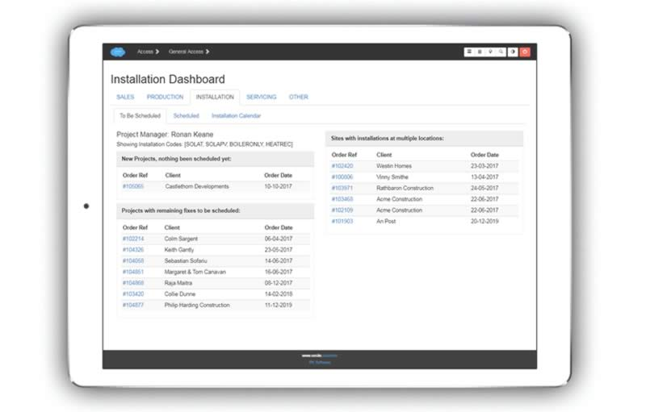

Installation¶
The installation module enables collaboration across the team and throughout the organisation. Additionally it presents different interfaces for project managers and installers specifically tailored for each use case.
The Installation Dashboard¶
Focused on helping the user schedule and track all installations ongoing, scheduled, or to be scheduled. The dashboard has three main screens as below.
Jobs to be Scheduled Screen¶
Orders/jobs that have recently been won by sales, or have remaining fixes to be carried out are listed here for scheduling.
Jobs Scheduled Screen¶
Click through to view greater detail about a scheduled job, or to make updates to it.
Surveys¶
If required, the list of scheduled installations can be separated from scheduled visits for site surveys.
Installations¶
This is the main view on this tab.
Installation Calendar View¶
A calendar view of all scheduled jobs quickly shows you what is scheduled for the week, or you may easily change the view to see the whole month.
Note
Calendar entries are colour coded and interactive - you can click through direct to the order details, or hover over the calendar bar for a tool-tip with more information about address, client, project manager etc.
Surveying for an Installation¶
Gathering information and specifying installation details is done continously from early enquiry stage through to detailed specification.
Click button ‘Add Installation Category” to pre-load components needed for the installation.
Then, all the user has to do is choose the quantity required and specify configuration details if these have been specified for the component in the “set-up” section.
Through a Site Visit¶
You can quickly and easily record the required information using phone or tablet. Also, upload photos directly from the phone or tablet.
Through Drawings and Other Documents¶
Installation components and other details specified during a design process may also be recorded using the above screens.
Scheduling an Installation¶
Scheduling an installation is done from the installation order view, on the ‘scheduling’ tab.
Check calendar for available dates
Specify whether one fix or multiple fix
Whether the date is confirmed or provisional
Days expected on site (changeable to weeks)
Preliminary site site survey needed? (optional field)
Single / Multiple Fix Installations¶
If it is a multiple fix installation, you may add additional fixes at any time for the installation.
Handling Multiple Locations on Site¶
Multiple locations are also intuitively handled (as well as multiple fixes). Just click ‘Schedule First Fix’ for an new location, and click the ‘Add Fix’ button for an additional fix at the location.

Note
Just click on the ‘Installation’ blue link on the left to bring up the corresponding details on the RHS of the screen. Here you can easily update date, duration, personnel assigned, and add other notes.
Scheduling Site Visits Other than for Installation¶
Site visits during the sales cycle may be created from within the sales module.
A pre-installation survey may be scheduled at the same time as you schedule the installation in two ways.
Specify the number of days before the installation to do the survey when you are scheduling an installation.
Choose the yes/no option to carry out a site survey when you are scheduling an installation (And a site survey task will be scheduled a pre-set number of days before the installation is scheduled to take place.
Entering Install Details¶
Click on the highlighted ‘Task Type’ in the left pane to bring up the corresponding details in the right pane that you would like to view or work with.

Assigning Personnel to the Job¶
A team may be automatically assigned when you schedule the installation. Alternatively, use the buttons to update the team.
Personnel assigned will see the job on their own personal calendars.
Supervisor (foreman)
Site Staff
Company-wide Calendar¶
For convenience there is a “company-wide” calendar that may be easily filtered by controls up at the top.
Filter by Task
Filter by Staff
Filter by Parent Category
Inspection & Checks (pre-install, post-install)¶
There are two main site inspections related to the installation. There is a tab for each in the installation order section.
Site Surveying (pre-installation)
Commissioning (post-installation)
The installer on site may also carry out commissioning, quality or other checks through their phone, by clicking on the ‘Checks’ tab in their screen
Note
Completion of installer’s task can be linked to completion of the requisite post-installation inspection.
Note
There are also servicing checks, covered in the next section.
Define Project Manager’s Product Categories¶
If desired, each project manager may have product categories assigned to them, so that they only see the type of job that is in their remit. This is done in the ‘Set Up’ section. (Typically we will do this for you).
Interfaces¶
There is a dedicated phone interface designed for simplicity and intuitive use out on site.
Office Interface¶
The main interface illustrated in the majority of this documentation.
Installer (Site) Interface¶
Installer clicks through the task on their personal calendar to view needed detail.